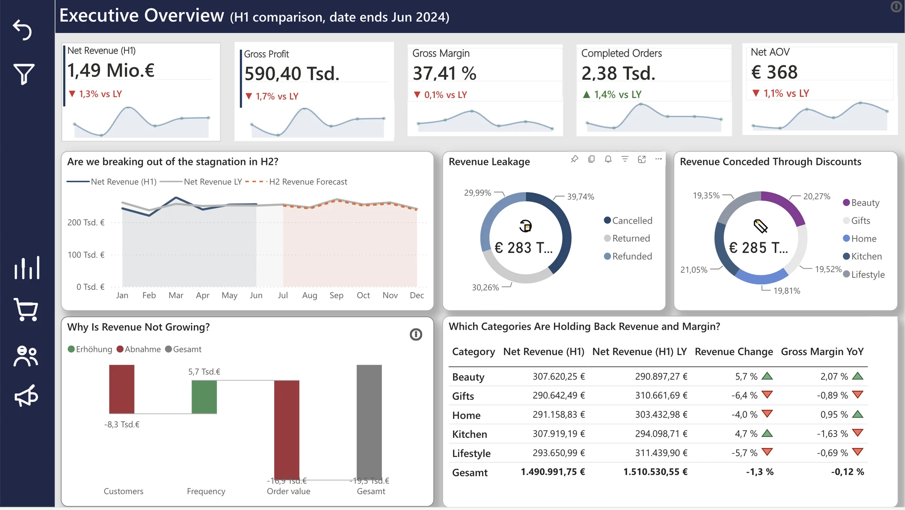
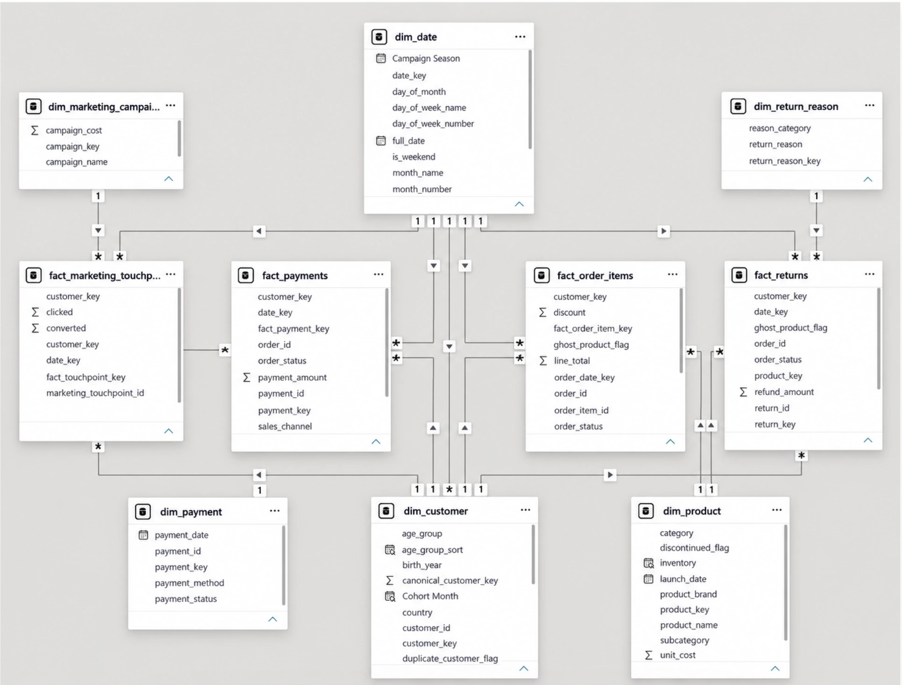
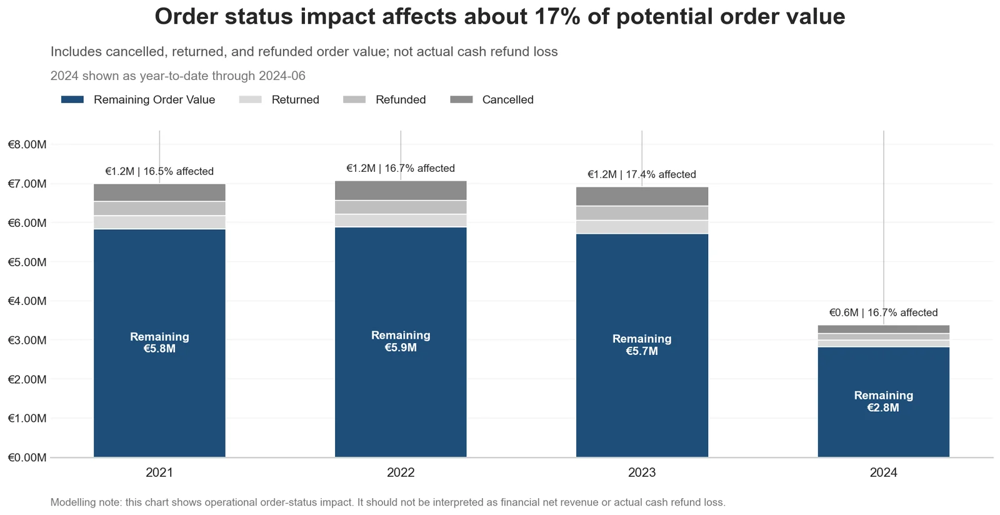
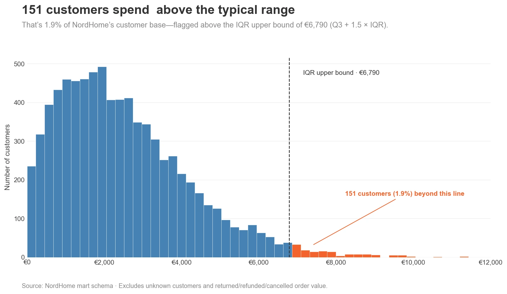
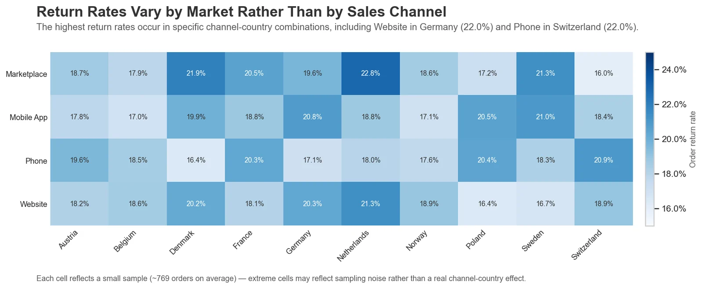
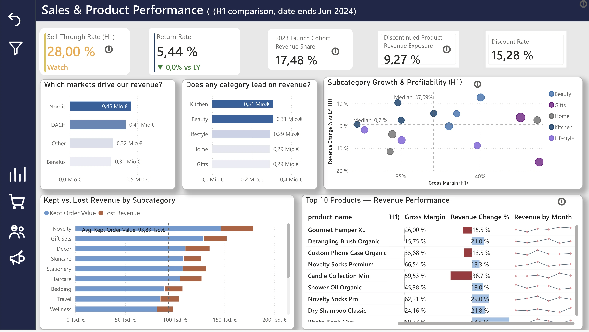
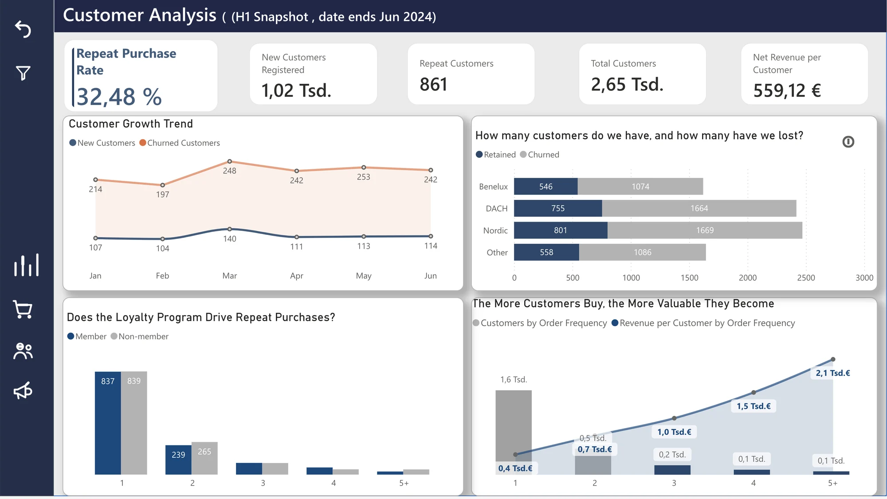
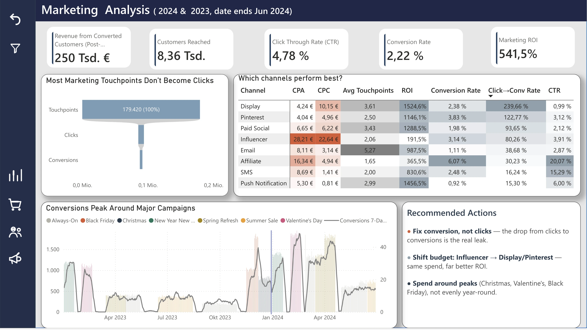

01 EXECUTIVE OVERVIEW
Is NordHome growing, and is that growth trustworthy?

01 — Retail analytics / Data warehouse
From raw retail data to business insight.
A retail analytics project combining PostgreSQL, Python, dimensional modeling and Power BI to investigate revenue, customer behaviour, product performance and marketing effectiveness.
Business question
What is happening across revenue, customers, products and marketing?
Approach
Data cleaning → ETL → dimensional modeling → EDA → BI
Output
A reusable analytical model and a four-page Power BI report.
NordHome is a fictional pan-European online retailer (home décor, kitchen, beauty, lifestyle and gift sets, ten markets). The data covers January 2021 to June 2024, read as H1 2024 against H1 2023. 166K+ raw rows in 7 source tables.
The data journey
Data + modeling
Before building the fact tables, I asked a simple question: What does one row actually represent?
That answer is the grain. It decides which joins are safe, which measures can be added up, and where the same value might be counted twice.

Data quality
The difficult part wasn’t simply loading the data. I first had to determine which records could be trusted, which needed correction and which needed to be flagged.
Ghost records are kept, not deleted: an order whose customer can’t be found is still a real sale, so it is mapped to an “unknown” key (−1). Totals stay correct, and analyses that need a real customer or product can exclude it. Also found: every order_id twice, ~18 spelling variants across 7 payment methods, 105 returns dated before the order, 22 negative refunds.
Found later, by questioning a number that looked wrong
A suspiciously high average order value led me to quantities of up to 1,996. Back-solving from the line total recovered the true quantity for 216 rows.
A downstream defect pushed the date range to Dec 2024 and silently broke every year-over-year measure. I fixed it to the real Jan 2021 – Jun 2024 window.
91% had real orders under both IDs. Deleting would lose history, merging would break keys — so I kept both and added a canonical customer key.
A problem I had to solve
On my first version of the revenue-leakage chart, refunds looked like the biggest source of lost revenue: €142K.
Three loss-rate measures had been written at different times against different bases — one divided by Net Revenue, another by Gross Sales Revenue. And the refund figure came from the returns table, which also holds refunds booked against cancelled and returned orders. The same money sat in more than one bucket.
I rebuilt all three on one base — Gross Order Value — with mutually exclusive numerators, all taken from order status. Order value now splits cleanly into retained, cancelled, returned and refunded.
A reliable dashboard starts with a reliable data model. A wrong denominator isn’t cosmetic — it can change the decision an executive makes.
Value lost, rebuilt on one base
Exploratory analysis
Before the dashboard, I explored the data in Python: 25 charts across six business areas. Three examples:
The question

What I found
About 17% of potential order value every year (16.5–17.4%) — a stable band with no improving trend. Cancellations are consistently the largest part.
Limitation Operational impact, not cash loss: actual cash refunds are a much smaller 2.6%.
The question

What I found
Not quite. 151 of 7,969 customers (1.9%) spend above €6,790, up to €11,428 — a small high-value group that the average hides.
Limitation Unknown customers and returned, refunded or cancelled value are excluded.
The question

What I found
Neither alone. Across 40 channel × country combinations, rates range from 16.0% to 22.8% (average 19.0%), highest for Marketplace in the Netherlands.
Limitation A modest signal: each cell is a small sample (~769 orders), so extreme cells may be noise.
The Python analysis and the Power BI report were built on different states of the data (some dashboard fields were regenerated later), so their numbers aren’t meant to be compared line by line.
Power BI report
The Power BI report translates the analytical work into business-facing views. Each page starts with a business question and follows the data to understand what is happening, why it is happening, and where to look next.
01 EXECUTIVE OVERVIEW

02 SALES & PRODUCT PERFORMANCE

03 CUSTOMER ANALYSIS

04 MARKETING ANALYSIS

The report lives in a private Power BI workspace, so these are screenshots. Click a view to open it full size.
Key findings
The waterfall points to falling order value, not fewer or less frequent customers, as the driver. H2 initiatives should target basket size rather than acquisition.
In the report, cancellations (€115.6K) are the biggest leak, ahead of returns (€90.0K) and refunds (€85.3K). Cancellations are where an audit pays off first.
In the EDA, 151 of 7,969 customers (1.9%) spend above €6,790. The report also shows churn outpacing new customers in every month and market (Nordics: 802 retained vs. 1,674 churned).
Influencer has the highest cost per acquisition (€28.21) and the lowest ROI (184.9%); Display and Pinterest return 6–8× more. Moving spend there is the most direct lever.
Technical architecture
Reflection
This project changed how I think about analytics. The dashboard is the visible part of the work, but most of the real thinking happens before it: understanding the business, defining the grain, checking relationships, writing down assumptions and deciding how imperfect data should be handled.
Grain and data quality decide whether a dashboard can be trusted. A refund figure that ranked first rested on a different base than its neighbours, and a date table that quietly stretched to December 2024 broke every year-over-year measure. A KPI without its context — its base, its period, its definition — can point a decision in the wrong direction.
It also taught me to let business questions drive the design, and that not everything I can build should be shipped: I built concentration measures, checked them, and dropped them when the data showed no real pattern. Connecting the technical work with the business question is the part I enjoy most — and next I want to take the customer question further with a segmentation (RFM) project.
NordHome is fictional and the data is synthetic. The Power BI report is not publicly published, so screenshots are shown.